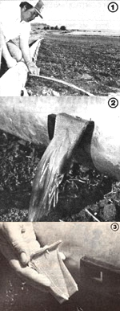

Here's the story of how one enterprising landowner solved his irrigation-erosion problem.
Stop Soil Erosion with "Softflow Screens"
When you need an uncomplicated, easy-to-use method of watering a sizable hunk of farmland, gated irrigation pipe is hard to beat. Unfortunately, it does have one major drawback: Water flows from gated pipe in a hard, thin, cutting stream that can cause tremendous erosion damage-especially when used on hilly fields and loose soils-within a few short hours.
Typically, the force of the flow first washes away the soil beneath the gate, and the turbulent motion of the water in the resulting catch basin then causes that hole to grow and eventually merge with the next. In this manner, the surface of a field can be pitted and trenched from end to end in a relatively short time, with literally tons of precious topsoil being washed away. And, as an added problem, water meant for one furrow will often run down another, leaving the first oversoaked and the second dry.
T HE MCCLELLAN SOLUTION
Well, Gary McClellan-a farmer out in Vale, Oregon-got tired of seeing his fields progressively eroded by his irrigation sys tem .. . so he decided to do something about it. However, Gary soon found that while everyone understood the problem, no one could offer a solution that was both economically feasible and practical to handle.
One helpful individual suggested the installation of pressure-reducing butterfly valves in each section of irrigation pipe, but that solution turned out to be far too costly. Another possible answer involved strapping a long socklike device over each gate and uncoiling it into the furrow. The water would flow through the sock, and its cutting energy would be dissipated. Unfortunately, the inquiring farmer soon found that the required socks were hard to come by in his area, proved difficult to strap to the pipe, and cost around $3.00 each . . . not inexpensive when you consider that Gary was irrigating through 100 gates at a time.
But McClellan wasn't whipped yet. A habitual tinkerer, he set to work trying to develop his own solution to the problem . . . and after two years of experimentation he came up with an effective, uncomplicated, and easy-to-use device for turning a destructive jet of water into a quietly bubbling, noneroding stream. Gary calls his invention the "Soft-flow Screen".
As ingenious as Gary's erosion-baffling device is, there haven't been many simpler inventions. The Softflow Screen is nothing more than a rectangular construction of multiple layers of wire mesh, which is secured to the irrigation gate with a sheet metal screw run through a flange at the top. The fastener is simply dropped, not screwed, into a hole drilled in the upper left-hand corner of the gate retainer (see the accompanying photos). When water begins to flow through the gate, the pressure exerted on the mesh screen forces the screw off center, locking the entire device in place.
Turning off the water removes the pressure, making the screens easy to lift off and transfer to another location.
While one section of Gary's fields is being irrigated through one 100-gate section of pipe, he's busily installing another 100 of the simple-to-make screens at a second location. When the flow is switched to that portion of his fields, his Softflow Screens are already in place and ready to baffle the jets of water. The farmer can then pick up the screens from the first section and move them to a third location. It's a system guaranteed to impress any efficiency expert.
McClellan says that his Softflow Screens are virtually indestructible, and so light that he can easily carry 100 at a time. Nor is plugging by waterborne debris a problem, because the material tends to migrate toward the center of the screen, forcing the flow to simply diffuse over more of the mesh surface. Later, when the material has dried out somewhat, it falls out of the screen on its own.
And not only does Gary's local soil conservation agent think that the Softflow Screen is the solution to the major drawback of gated irrigation pipe, but a lot of farmers feel the same. The inventor originally made the devices only for himself and a few neighbors, but word spread quickly, and soon he was getting calls from as far away as Nebraska. In fact, the Softflow Screen has proved so successful that Gary McClellan has taken out a patent and is selling his invention to other farmers who face the same problem he once did.
E DITOR'S NOTE: For more information about the Softflow Screen, send a self-addressed, stamped envelope to Gary McClellan, Dept. TMEN, Rt. 2, Box 303, Vale, Oregon 97918.
|
 [1] The water flow before the installation of a Softflow Screen... [2] and the same jet of water after the handy device is locked in place. [3] This close-up shows the wire mesh construction and the holding screw. |
|
|